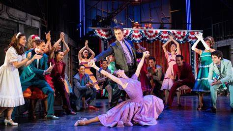

Qué es un musical?
| Un musical es una forma de expresión de arte escénico en el que la acción se desenvuelve con secciones cantadas y generalmente, bailadas justo después de un diálogo no muy extenso. Es un género que combina la música, canciones, diálogo y baile, y que suele representarse en grandes escenarios, tal como los teatros de West End de Londres o Broadway, en Nueva York, principales sedes del teatro musical, seguidos de Argentina, Australia, Brasil, Canadá, España, Francia y México. |  |
Características
Existen diversas variedades de musicales dependiendo de la manera en la que hayan sido escritas. Una de las formas más básicas (con la que se escribieron los primeros musicales) consiste en tomar canciones preexistentes y escribir una historia alrededor de ellas (denominado un musical "jukebox", haciendo alusión a las antiguas máquinas reproductoras de discos de vinilo, que compilaban canciones de diversos artistas para ser elegidas por el cliente a cambio de una moneda).
Historia
El musical es una producción en la que se integran en una trama emocional canciones y bailes, acompañamientos instrumentales e interludios y, a menudo, también danzas. Este género renació como se conoce hoy en día en la Europa del siglo XIX como una variante de la opereta, aunque en los diferentes países existía teatro musical con diferentes estilos: zarzuela, género chico y comedia musical en España, opera cómica y music hall en Inglaterra u operette en Francia. Mucho después, durante la primera mitad del siglo XX, se desarrolló en Estados Unidos, país donde ha registrado el máximo desarrollo.
Origenes
Se puede decir que el musical nació el 12 de septiembre de 1866, el día en el que en Estados Unidos se pone en escena por primera vez una ópera (The Black Crook), que surge de la unión entre una compañía de danza y baile europea con una compañía de teatro.1 Esta colaboración surge del hecho de que la primera se encontraba sin un recinto donde actuar mientras que la segunda estaba montando una producción que resultaba ser mucho más cara de lo esperado. Superadas las dificultades económicas y de organización el 12 de septiembre se estrenaba la pieza en el Niblo's Garden de Nueva York.